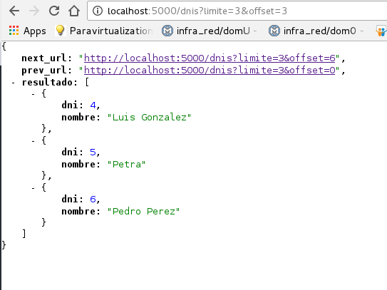
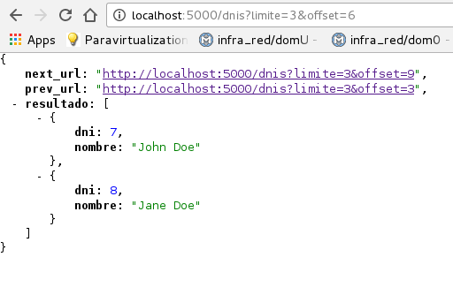

Continuando con la serie de artículos sobre acceso a mongodb desde Flask.
El artículo anterior hace una consulta incial a la base de datos.
Para revisar los artículos relacionados a este artículo pueden ver:
En la base de datos mongodb se tiene lo siguientes datos de los empleados:
[{"edad": 29, "nombre": "Jane Doe", "dni": 8, "sexo": "Femenino", "_id": {"$oid": "57ebbce45fd2bbeffc51330b"}}, {"edad": 39, "nombre": "John Doe", "dni": 7, "sexo": "Masculino", "_id": {"$oid": "57ebbd195fd2bbeffc51330c"}}, {"edad": 55, "nombre": "Pedro Perez", "dni": 6, "sexo": "Masculino", "_id": {"$oid": "57ebbd505fd2bbeffc51330d"}}, {"edad": 65, "nombre": "Petra", "dni": 5, "sexo": "Femenino", "_id": {"$oid": "57ebbd6b5fd2bbeffc51330e"}}, {"edad": 18, "nombre": "Luis Gonzalez", "dni": 4, "sexo": "Masculino", "_id": {"$oid": "57ebc34d5fd2bbeffc51330f"}}, {"edad": 28, "nombre": "Carolina", "dni": 3, "sexo": "Femenino", "_id": {"$oid": "57ebc3715fd2bbeffc513310"}}, {"edad": 34, "nombre": "Luissana", "dni": 2, "sexo": "Femenino", "_id": {"$oid": "57ebc3935fd2bbeffc513311"}}, {"edad": 43, "nombre": "Neg", "dni": 1, "sexo": "Masculino", "_id": {"$oid": "57ebc4b85fd2bbeffc513312"}}]
Ahora se agregó un campo llamado dni, y se tienen 8 empleados.
El código fuente de este artículo lo pueden ver en la rama mongo2 de gitlab.
Estructura de directorios y archivos
tutorial-flask
├── app
│ └── run.py
├── docker-compose.yml
├── Dockerfile
└── README.md
Esta es la misma estructura del artículo anterior.
Archivo Dockerfile y docker-compose.yml
Estos archivos son los mismos del artículo anterior.
Script app/run.py
Este script permite paginar según una variable llamada dni, el cual se usará para realizar la consulta paginada.
A continuación el código de run.py:
#!/usr/bin/env python
#Se importa Flask, reqest y jsonify
from flask import Flask, request,jsonify
#Se importa pyMOngo
from flask_pymongo import PyMongo, pymongo
#Se importa dumps
from bson.json_util import dumps
#Se instancia la clase de Flask, se configura el acceso
#a la base de datos mongodb a empleados
app = Flask(__name__)
app.config['MONGO_DBNAME'] = 'empleados'
app.config['MONGO_URI'] = 'mongodb://mongo:27017/empleados'
#Se asocia la app a pymongo
mongo = PyMongo(app)
#Se define la ruta /dnis con metodo GET
@app.route('/dnis',methods=['GET'])
def dni():
#Se consutla la coleccion empleados
empleados = mongo.db.empleados
#Se toma los argumentos del url offset y limite
offset = int(request.args['offset'])
limite = int(request.args['limite'])
#Se define el decremento como la diferencia entre offset y el limite
decremento = offset-limite
#Se define el incremento como la suma entre offset y limite
incremento = offset+limite
#Mientras no de error de indice
try:
#Se define el dni inicial, el ultimo
dniInicio = empleados.find().sort('dni',pymongo.ASCENDING)
dniUltimo = dniInicio[offset]['dni']
#Se hace la consulta a la base de datos
empleados = empleados.find({'dni': {'$gte': dniUltimo}}).sort('dni',pymongo.ASCENDING).limit(limite)
#Se crea el listado de donde se almacena los diccionarios.
listado = []
#Se agrega a listado os dni y nombres de los empleados.
for i in empleados:
listado.append({'dni': i['dni'],'nombre': i['nombre']})
#Se define el url previo y siguiente, donde se juega con el offset para avanzar o regresar
prev_url = 'http://localhost:5000/dnis?limite=' + str(limite) + '&offset=' + str(decremento)
next_url = 'http://localhost:5000/dnis?limite=' + str(limite) + '&offset=' + str(incremento)
#Si decremento es negativo se coloca el url en blanco.
if ( decremento < 0) :
prev_url = ''
#Se retorna el json con los resultados y los urls.
return jsonify({'resultado': listado,'prev_url':prev_url,'next_url':next_url })
except (IndexError,):
#Si hay error de indice se defin el url siguiente en blanco, el url previo se mantiene.
next_url = ''
prev_url = 'http://localhost:5000/dnis?limite=' + str(limite) + '&offset=' + str(decremento)
#Se retorna un json con el resultado y urls .
return jsonify({'resultado': 'FIN','prev_url':prev_url,'next_url':'' })
if __name__ == "__main__":
#Se corre la aplicacion en modo debug
app.run(host="0.0.0.0",debug=True)
Creación de la imagen docker y ejecución de los contenedores
Para crear la imagen docker se ejecuta:
docker-compose build
Para ejecutar los contenedores:
docker-compose up
A continuación se muestra una imagen de la salida de la ejecución:

A continuación se muestran los documentos por medio de la aplicación robomongo:

Al abrir el url (http://localhost:5000/dnis?limite=3&offset=0 ), donde limite es la cantidad de objetos a mostrar por página, el offset es el desplazamiento.
La primera figura muestra el primer grupo de empleados (no se tiene url para regresar):

Al darle click al siguiente url se tiene a continuación los dni 4,5 y 6 (aparece el url de regresar y avanzar):

Al darle click a avanzar se tienen los empleados de dni 7 y 8:

Como se tienen 8 elementos, se llegó al dni 8, al darle avanzar muestra que se terminó el json y que sólo se tiene enlace para regresar:

¡Haz tu donativo! Si te gustó el artículo puedes realizar un donativo con Bitcoin (BTC) usando la billetera digital de tu preferencia a la siguiente dirección: 17MtNybhdkA9GV3UNS6BTwPcuhjXoPrSzV
O Escaneando el código QR desde la billetera:

Comments !